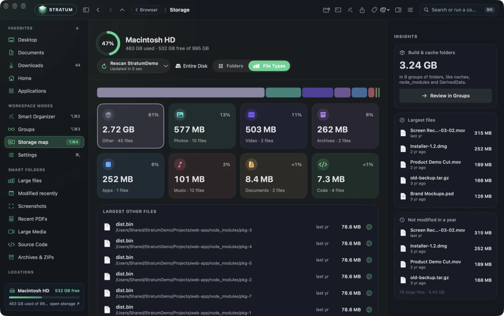
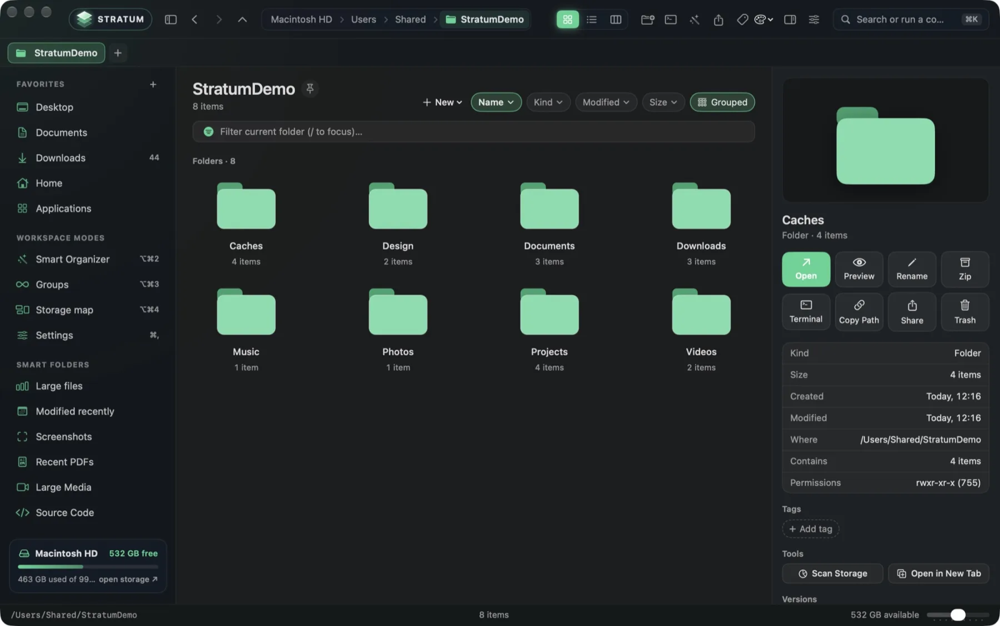
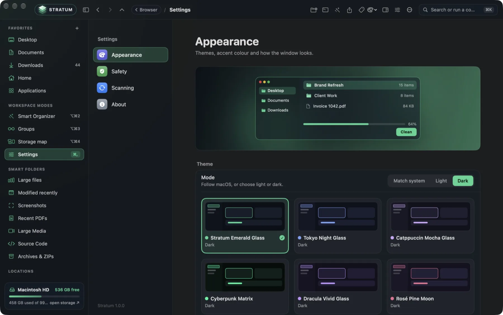

STRATUM
Your Mac, in layers.
A native file manager and storage analyzer. Browse fast, see where the space went, and clean up build caches and duplicates with an undo.
Free and open source. macOS 14 or later.
See where the space went.
Stratum scans a folder, or your whole disk, once. After that it is a map: the bigger the block, the bigger the folder. This one is live, so click a block to open it.
Click a folder to open it. Esc goes back. Sample data, not your disk.

The same disk, by type
Switch to File Types to see video, photos, code, apps, documents, music and archives. Pick one to list its heaviest files and reveal any of them in Finder.
Insights that only point
A side panel shows what is worth a look: build and cache folders, your largest files, and large files nobody has touched in a year. It never deletes anything.
History that stays small
Each scan saves a few kilobytes of totals. The Storage History page charts how the disk grew and which folders and file types did the growing.
The same folder, everywhere.
node_modules, DerivedData, .venv, target, Pods. They pile up under every project. Groups finds every folder that shares a name and totals them. Click a bubble to move that group to the Trash.
Space reclaimed
0 GB
- Everything goes to the Trash first, so ⌘ Z brings it back.
- Protect active projects skips folders changed in the last 14 days.
- System paths are always protected, and large cleanups ask first.
A file manager you can live in.
The map is one screen. The rest is a full browser for everyday work, built on native lists so large folders stay smooth.

Three views
Icons, list and columns, with a size slider and grouping.
Tabs and windows
Pin the tabs you keep. Extra windows share one disk scan.
Inspector
Preview, metadata, Finder tags and quick actions for the selection.
Command palette
⌘ K finds files by name or content and runs any action.
Make it yours.
Seventeen themes, twenty accent colours, or an accent picked from your wallpaper. Light, dark, or follow the system. Settings shows a live preview as you change things.

Also in the box.
Smaller things that make the daily work quicker.
- Smart Organizer
- Sort a messy folder into category folders and find exact duplicates, verified with SHA-256.
- Shelf
- Park files from several folders, then copy or move them all into one place.
- Fast transfers
- Copies use APFS cloning where possible. Pause or cancel from the toolbar.
- Open from Finder
- Turn on Open in Stratum and it appears under right-click, Quick Actions.
- Private
- Everything runs and stays on your Mac. No account, no analytics. The only network request is the update check.
- Updates itself
- New versions arrive through Sparkle, and every update is signature-verified.
Under the layers.
Three layers, top to bottom. One scan feeds every screen, so nothing is read from the disk twice.
What you see
SwiftUI around native AppKit collection and table views.
What it remembers
One scan in a local SQLite database, so the map and groups answer instantly and survive a relaunch.
How it reads the disk
getattrlistbulk for the scan. FSEvents notices changes and refreshes in the background.
Keys worth knowing.
- Command palette⌘K
- Icons, list, columns⌘123
- Switch screen⌥⌘1–5
- New tab⌘T
- New window⌘N
- Go to folder⇧⌘G
- Quick Look⌘Y
- Move to Trash⌘⌫
- Undo the last Trash⌘Z
Get your disk back.
Download the DMG, open it, and drag Stratum into Applications. Free, open source under the MIT licence, for macOS 14 or later.
macOS says it can't verify Stratum
The app is not notarized yet, so the first launch is blocked. Click Done, not Move to Bin. Then open System Settings, Privacy & Security, scroll to the message about Stratum and click Open Anyway. Or run this once in Terminal:
xattr -dr com.apple.quarantine /Applications/Stratum.appFor the whole-disk map and Groups, give Stratum Full Disk Access. The welcome tour takes you to the right pane.
Build it from source
You need a recent Xcode and XcodeGen.
brew install xcodegen
git clone https://github.com/AbyAbyss/stratum_file_manager.git
cd stratum_file_manager
xcodegen generate
open Stratum.xcodeproj